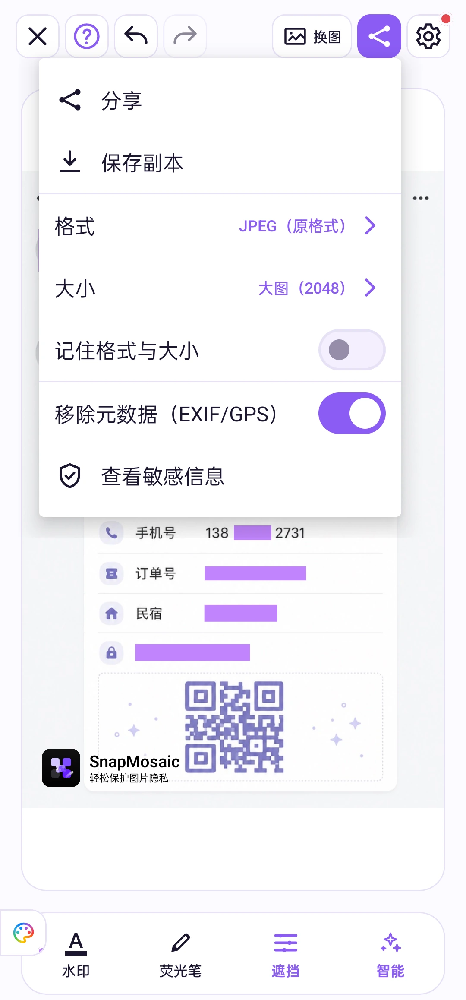

开始使用
快速上手
选一张图片，遮住私密细节，再导出副本。在 Android 版 SnapMosaic 中，跟着这四步完成一次编辑。
跟着操作一遍
点击时间可跳到对应步骤，也可全屏查看操作细节。
选择一张照片
打开 SnapMosaic，从系统照片选择器选一张图片。第一次使用，也可以点击首页的“试试示例照片”，先熟悉操作。
智能识别
等待图片载入。如果开启了自动打码，先查看已应用的遮挡；否则，点击底部“智能”，对人脸、各类码和常见敏感文字应用建议遮挡。
手动打码与选词
长按已识别的一行文字，再点选要隐藏的词语或片段。遇到遗漏的内容，点击底部“遮挡”并选择效果，再在“调节”中选矩形或涂抹，手动补上。操作有误时可以撤销。

保存与分享
点击顶部分享图标，选择 JPEG、PNG 或 WebP，以及输出大小。需要移除导出文件里的位置等信息时，开启“移除元数据（EXIF/GPS）”。


分享前，再看一遍
- 放大到文字清晰可读，检查人脸、姓名、手机号、地址和各类码。
- 确认想隐藏的内容已被完整遮住。只有描边的区域不会在导出时自动变成遮挡。
- 打开保存后的图片，确认结果后再发送。